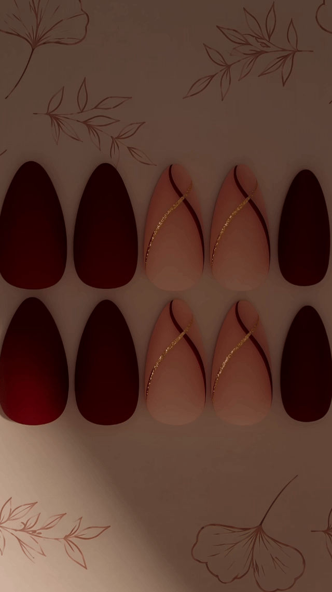

Pretty nails · Hechas para ti
Jumaré... Tu momento, tu estilo
Uñas press-on con acabados especiales para estrenar un nuevo look en minutos. Cambia de estilo sin complicarte la vida y vuelve a usarlas con los cuidados adecuados. Envíos a toda Colombia.


Brilla a tu manera ✦
Catálogo Jumaré
Un diseño para cada versión de ti.
Explora una selección del catálogo real. Usa los filtros y toca cualquier diseño para verlo en detalle.


Tu ritual Jumaré
Tu nuevo look, en minutos.
Aplica, disfruta y guarda para volver a usar.
Elige y prepara
Elige el tamaño de cada uña. Lima suavemente el brillo natural, limpia con la toallita de alcohol y deja secar.
Pega y presiona
Usa stickers para un look temporal o pegamento para mayor fijación. Coloca sin tocar la piel y presiona según las instrucciones del adhesivo.
Retira y guarda
Cuando quieras retirarlas, hazlo con suavidad. Limpia y seca las press-on antes de guardarlas en su bolsita.
Cómo retirarlas y cuidarlas
Con stickers: remoja en agua tibia con jabón unos 5 minutos. Prueba a levantar suavemente los bordes; si hay resistencia, remoja un poco más.
Con pegamento: remoja las uñas en agua tibia con jabón y unas gotas de aceite de almendras durante 10–15 minutos. Comprueba con suavidad si los bordes se han aflojado. Si siguen firmes, repite el remojo y espera; no las arranques ni hagas palanca.
Para volver a usarlas, retira con cuidado los restos de stickers usando el palito de naranjo. Si queda pegamento resistente, lima muy suavemente el interior sin desgastar la press-on (¡sin forzarla!). Al terminar, pásales un pañito suave y guárdalas bien secas en su bolsita. ¡Listas para tu próximo look! 💅
Al terminar: lava tus manos e hidrata las cutículas con una gota de aceite de almendras.

Jumaré en movimiento
Próximamente: looks y tutoriales.
Este espacio está preparado para mostrar videos de aplicación, detalles y nuevas colecciones cuando los clips estén disponibles.